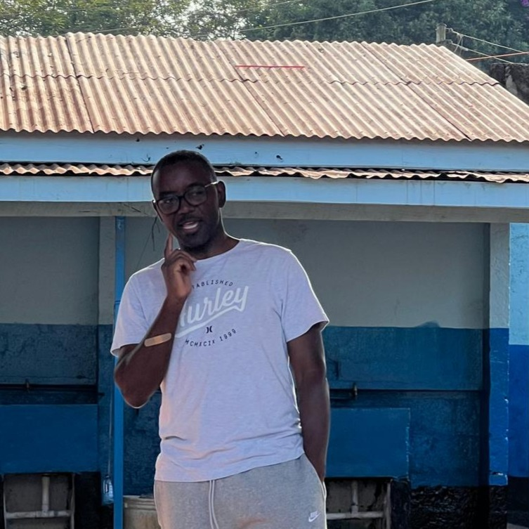

Our Story
“And we know that all things work together for good to them that love God, to them who are the called according to his purpose.”
Romans 8:28.
As far as I can remember, I have pulled this scripture to speak bad experiences into good ones by faith; but it is also important to realize that a good thing, also a part of all things, that happens to us can result in more good to God’s people. The latter is the story of TrainUp ministries as you will discover shortly.
In 2017, my thoughtful and considerate boss Kristine, God bless her, sent me on a work from home program to avoid wasting time on my 5 hours commute to and from work combined. With this new and practical work arrangement, I found myself with enough time to drop off our three children to school, and still have lots of time left over. I quickly figured that our kids could as well do a Bible devotional plan with me with the new found extra time. My wife would then join us later. We did a few devotionals, and then did some more, thank God for the YouVersion Bible app that made it easy for us. Without my knowledge, my three kids passed the word about the devotionals we were doing together to their friends who also told their other young friends as time went by. With parental consent, I had to be innovative to involve the rest of the kids on an online platform where we all would read the same Bible devotional on a daily basis, and make personal comments of what we have learnt under the “Talk It Over” section of the YouVersion Bible app. We grew in numbers from our 3 children to 50 in a span of 2 years.
In 2019/2020 the unexpected happened, COVID-19 pandemic broke out. We experienced the lock down, meaning kids could no longer meet up with their friends in school, houses of worship or playgrounds. One day I reasoned; what if we did a Zoom call with the kids every Friday and actually read the devotionals together. That worked, because it gave the kids a chance to see their friends, and also make new ones on a safe parents and teacher volunteers supervised online platform. This community of kids grew and by God’s grace we maintained a 25 to 50 kids Zoom Bible study attendance.
 When COVID lockdown ended, it made sense to me to explore the idea of the youth meeting possibly once a month in a physical setting. When we called the first meeting, we had about 50 kids and their parents show up; something we did not really expect. The following month, we did a second physical meeting, a Worship Experience, and about a hundred kids and parents showed up. At this rate, my wife and I knew that God was calling us into ministering to the lives of young people. Since then, we have not looked back.
Fast forward, we have grown since then, and have incorporated so many other things that kids love doing together, and still learn the word of God. We now have a well established vibrant Zoom Bible study that meets every Friday. The Zoom Bible Study is now actually split into three breakout rooms: Kids, Teens and Young Adults. God has blessed us with 4 consistent Bible Study volunteer teachers. On the aspect of physical meetings, we have Coffee House Worship Nights, Christian Jazz dinners for the youth, Worship Experience meets, Game and Beach play dates, street worship, youth seminars and conferences, citizenship days, travel locally, and regionally for youth events. Starting 2025, we will be traveling on international missions, starting with Kenya.
Fun Fact: TrainUp Ministries name comes from Proverbs 22:6, “Train up a child in the way he should go: and when he is old, he will not depart from it.”